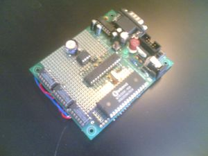
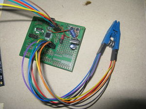
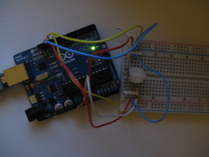
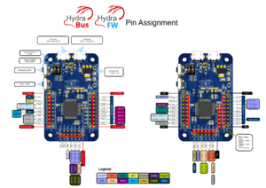
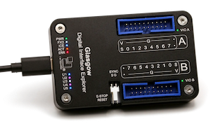
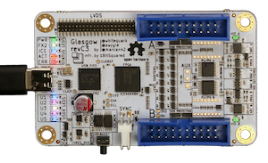

Serprog (overview)¶
This page collects information about the serprog protocol and the programmers implementing it.
Protocol¶
See Serial Flasher Protocol Specification. It is designed to be compact and allow efficient storage in limited memory of programmer devices.
AVR flasher by Urja Rannikko¶

The Prototype RS232 AVR parallel flash programmer of Urja Rannikko was the first implementation of the serprog protocol.
The source code can be found here.
InSystemFlasher by Juhana Helovuo¶
This was the first one that talks to SPI devices via serial over USB. Details can be found in the coreboot wiki and in this coreboot mailing list thread.
atmegaXXu2-flasher by Stefan Tauner¶
Like the InSystemFlasher this one uses LUFA on an AVR microcontroller to tunnel the serial data over USB.

Various Arduino based flashers¶
Frser-duino¶
This project contains source code to install on Arduino devices.
This developer also have various ports on github repo for several microcontroller boards, such as:
frser-teensyflash: A port for the teensy microcontroller board
There also various other interesting projects such as:
fast-usbserial: A software to make arduino with 8u2 or 16u2 flashing faster and more reliable]
Using a 5v Arduino at 3.3V¶
Information on it can be found in this doc: Arduino flasher 3.3v
5V arduino with level shifter¶
For detailed instructions on how to use different Arduino models to access SPI flash chips see Arduino flasher

Teensy 3.1 SPI + LPC/FWH Flasher¶
A Teensy 3.1 based small flasher by Urja Rannikko documented here: Teensy 3.1 SPI + LPC/FWH Flasher
HydraBus multi-tool¶
HydraBus (hardware) with HydraFW (firmware) is an open source multi-tool for learning, developing, debugging, hacking and penetration testing of embedded hardware. It is built upon an ARM Cortex-M4 (STM32F405). The source code for HydraFW is available on GitHub. Refer to their GitHub Wiki for more details on how to use HydraBus with flashrom.

stm32-vserprog by Chi Zhang¶
A powerful option is stm32-vserprog, a firmware for various STM32-based boards that turns them into serprog-based programmers with SPI clock speeds up to 36 MHz.
pico-serprog¶
pico-serprog by stacksmashing is a firmware for Raspberry Pi Picos and other RP2040 based boards which turns them into a serprog programmer.
Notable forks are:
Riku_V's fork which uses the hardware SPI implementation instead of SPI over PIO (programmable IO) which sacrifices arbitrary pinouts. The fork also implements custom USB descriptors which allow for custom udev-rules.
Glasgow Interface Explorer by Whitequark¶


The Glasgow Interface Explorer is a tool for programming, debugging, and analysing digital electronics. It is based on an FPGA and a microcontroller, and can be used as a serprog programmer. Source for the Glasgow Project can be found here: Glasgow Project Souce. For example use with Flashrom and serprog, see this blog post.